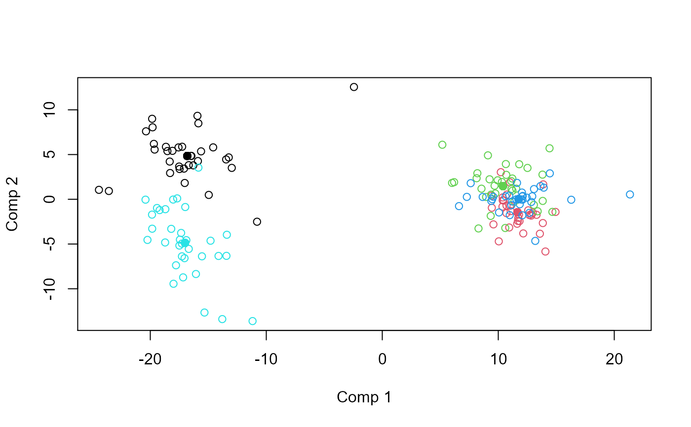
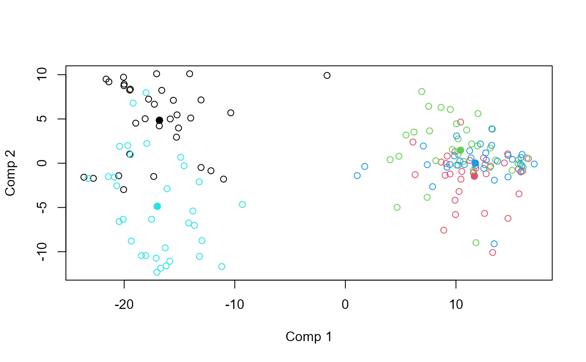

This is a quite general and flexible implementation of ASCA.
asca(formula, data, subset, weights, na.action, family, pca.in = FALSE)Model formula accepting a single response (block) and predictor names separated by + signs.
The data set to analyse.
Subset of objects
Optional object weights.
How to handle NAs (no action implemented).
Error distributions and link function for Generalized Linear Models.
Compress response before ASCA (number of components).
An asca object containing loadings, scores, explained variances, etc. The object has
associated plotting (asca_plots) and result (asca_results) functions.
ASCA is a method which decomposes a multivariate response according to one or more design
variables. ANOVA is used to split variation into contributions from factors, and PCA is performed
on the corresponding least squares estimates, i.e., Y = X1 B1 + X2 B2 + ... + E = T1 P1' + T2 P2' + ... + E.
This version of ASCA encompasses variants of LiMM-PCA, generalized ASCA and covariates ASCA. It includes
confidence ellipsoids for the balanced fixed effect ASCA.
Smilde, A., Jansen, J., Hoefsloot, H., Lamers,R., Van Der Greef, J., and Timmerman, M.(2005). ANOVA-Simultaneous Component Analysis (ASCA): A new tool for analyzing designed metabolomics data. Bioinformatics, 21(13), 3043–3048.
Liland, K.H., Smilde, A., Marini, F., and Næs,T. (2018). Confidence ellipsoids for ASCA models based on multivariate regression theory. Journal of Chemometrics, 32(e2990), 1–13.
Martin, M. and Govaerts, B. (2020). LiMM-PCA: Combining ASCA+ and linear mixed models to analyse high-dimensional designed data. Journal of Chemometrics, 34(6), e3232.
Overviews of available methods, multiblock, and methods organised by main structure: basic, unsupervised, asca, supervised and complex.
Common functions for computation and extraction of results and plotting are found in asca_results and asca_plots, respectively.
# Load candies data
data(candies)
# Basic ASCA model with two factors
mod <- asca(assessment ~ candy + assessor, data=candies)
print(mod)
#> Anova Simultaneous Component Analysis fitted using 'lm' (Linear Model)
#> Call:
#> asca(formula = assessment ~ candy + assessor, data = candies)
# ASCA model with interaction
mod <- asca(assessment ~ candy * assessor, data=candies)
print(mod)
#> Anova Simultaneous Component Analysis fitted using 'lm' (Linear Model)
#> Call:
#> asca(formula = assessment ~ candy * assessor, data = candies)
# Result plotting for first factor
loadingplot(mod, scatter=TRUE, labels="names")
scoreplot(mod)

# ASCA model with compressed response using 5 principal components
mod.pca <- asca(assessment ~ candy + assessor, data=candies, pca.in=5)
# Mixed Model ASCA, random assessor
mod.mix <- asca(assessment ~ candy + (1|assessor), data=candies)
scoreplot(mod.mix)
